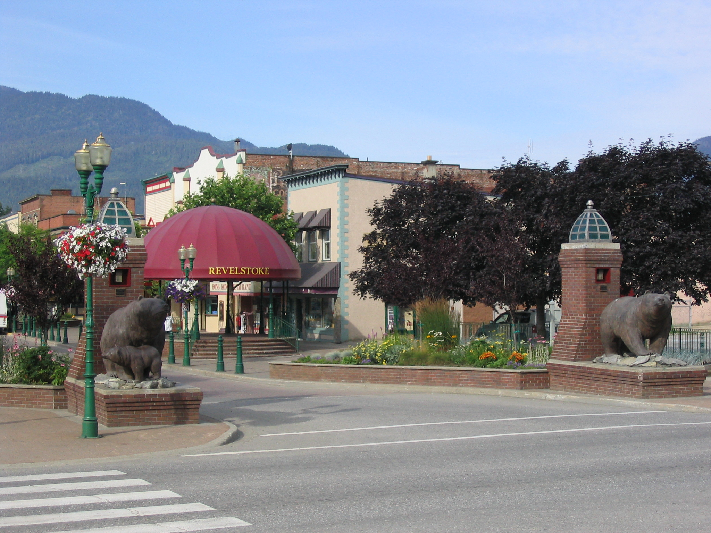
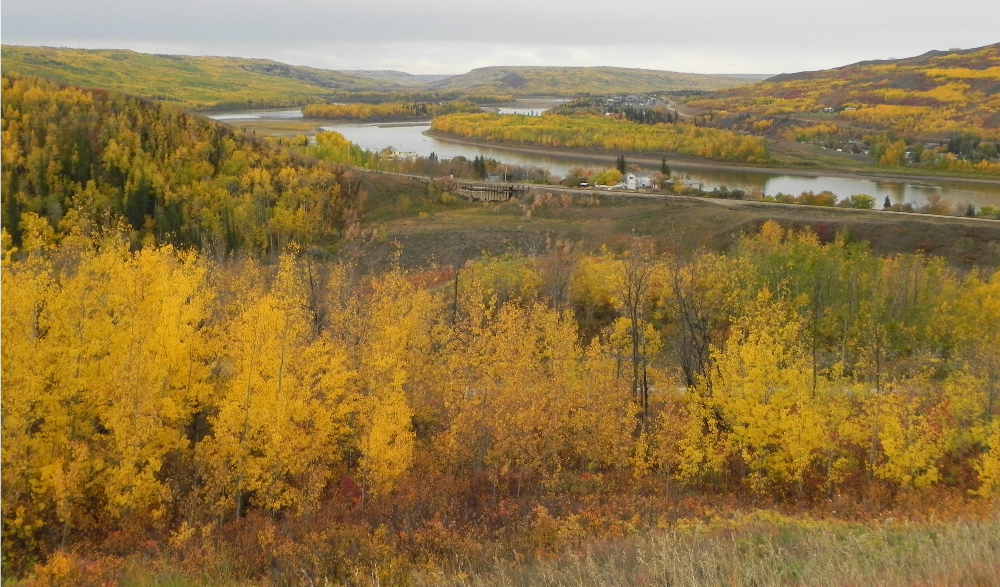
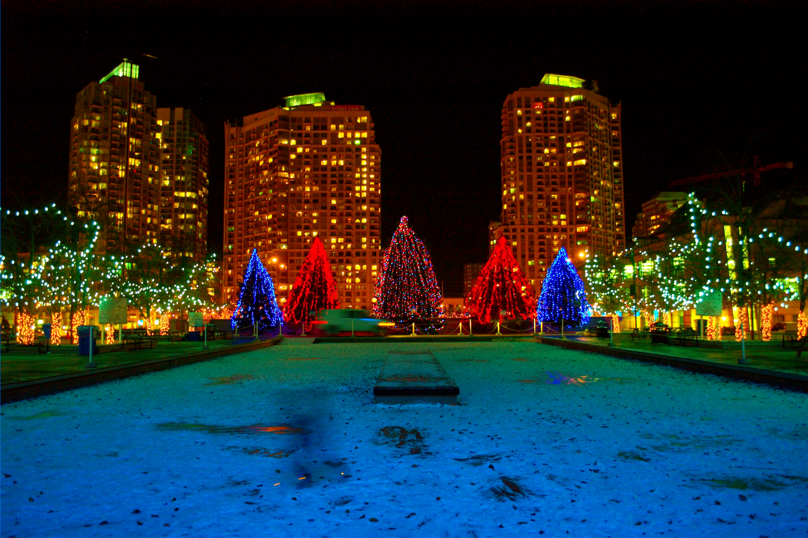
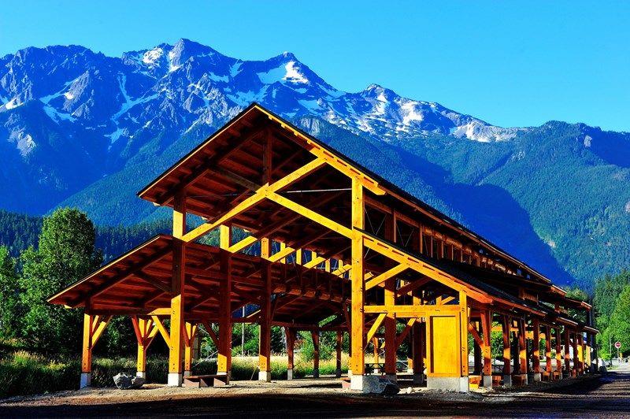
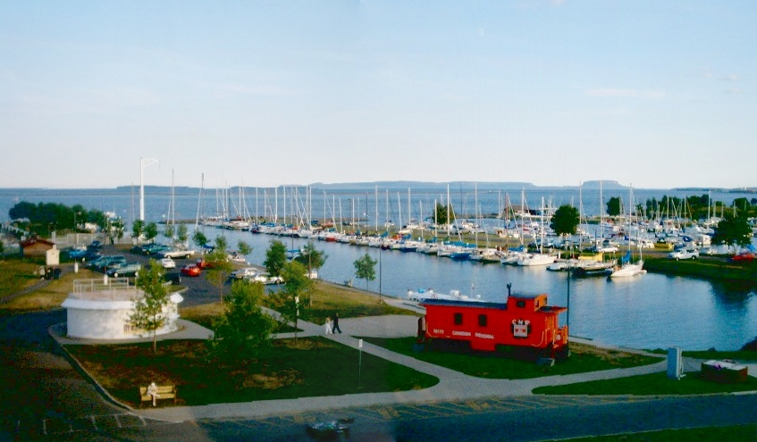
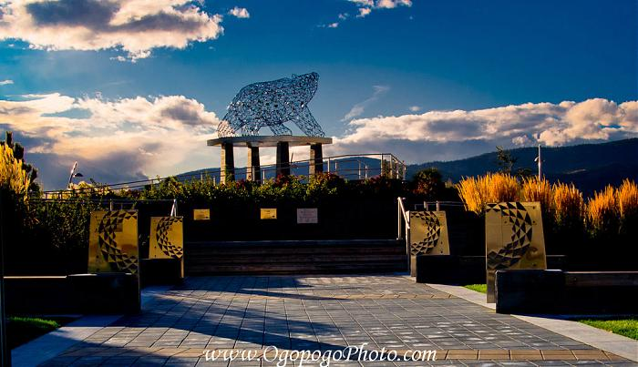
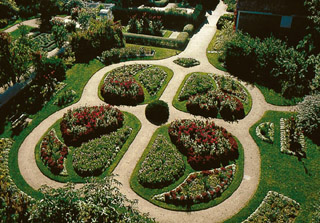

-
Grizzly Plaza
Welcome to Grizzly Plaza, in Revelstoke British Columbia. A variety of seasonal community events are held here. Stop on by and see what awaits. http://www.seerevelstoke.com/
Find out more about Grizzly Plaza!Lethbridge River Valley
The Lethbridge River Valley provides a backdrop through which to celebrate the regions heritage and bring the community together. Stop on by and see what awaits. http://www.lethbridge.ca.
Find out more about Lethbridge River Valley!Mississauga Celebration Square
From digital screens, sound/lighting systems, amphitheatre, and a water fountain/skating rink, Celebration Square has everything you need to take part in place-making events. http://www.mississauga.ca/
Find out more about Mississauga Celebration Square!Pemberton Downtown Community Barn
This gathering space combines old world charm with modern amenities in Pemberton's downtown. The open air concept offers spectacular mountain views and is a welcoming space for people of all ages! http://www.pemberton.ca
Find out more about Pemberton Downtown Community Barn!Prince Arthurs Landing at Marina Park
Reopened in 2011, this community space offers a range of facilities including a concert stage and garden pavillion equipped with a restaurant. From recreation to entertainment, this public space offers year round activities to bring the community together http://www.thunderbay.ca
Find out more about Prince Arthurs Landing at Marina Park!Stuart Park
Stuart Park was voted the best public space in the Great Places in Canada initiative by the Canadian Institute of Planners. The people's choice is reflected in the range of year round activities that promote well-being from dancing to skating and cultural celebrations. Stuart Park has become a landmark for the city of Kelowna http://www.kelowna.ca/
Find out more about Stuart Park!Annapolis Royal Historic Gardens
Welcome to the Annapolis Royal Historic Gardens, a gathering place for gardening enthusiasts! In addition to supporting and promoting local gardening through workshops for all age groups, the gardens also house the Annapolis Royal farmers market. So come stop and smell the roses at the acclaimed Historic Gardens http://www.historicgardens.com/index.php
Key Concepts
Promoting Resilience
Torjman (2007) suggests that shared places help to promote strong and vibrant communities because it helps to build resilient communities capable of prospering in times of adversity. By bringing together people, a foundation for engagement is provided whereby which people can find common understanding. From this engagement and understanding, we are able to work towards common goals to help further support and build stronger communities. Shared spaces present great opportunities for great discussion. (Torjman, S. (2007). Shared Space: The Communities Agenda. ON: The Caledon Institute of Social Policy) .
Explore this conceptImportance of Place
The concept of shared and public spaces is rooted in the notion of place. Whether it be the physical space in which we live or emotional place, place provides meaning and belonging in our daily lives. Places are the foundation upon which a network for people can be built. The importance of place takes significance when we think about well-being and development; quality of places and their attributes impacts our health, social cohesion, and economic welfare (Torjman, S. (2007). Shared Space: The Communities Agenda. ON: The Caledon Institute of Social Policy).
Explore this conceptSocial Capital
The purpose of shared spaces is to bring people together, they are a location whereby which human interaction occurs. The way a place is planned ultimately impacts community health as increased social activity helps to foster an environment of support, security and trust. The socio-spatial attributes associated with these places help create unique spaces for community gatherings. Regardless of their size or geometry, public spaces serve as a means of community development and social development creating and reinforcing social bonds among people. (Friedman, A. (2014). Planning Small and Mid-Sized Towns. NY: Routledge).
Explore this conceptClick the Images Below to Learn More About Local Initiatives That Help Foster Livable Communties